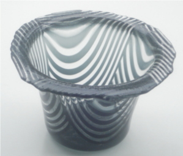

Laakea ja paksu lasi vajuu nopeammin. Samassa ajassa kun vati on jo vajunut muotoon, pieni tuikkukuppi on vajunut tuskin havaittavasti.
Vajutuksessa lasi pehmennetään niin notkeaksi että se taipuu onasta painostaan, mutta ei pyri vialumaan muotin reunoja alas.
Vajutuksessa painovoima tekee työn yhdessä lämmön kanssa. .
Laakea ja paksu lasi vajuu nopeammin.
Samassa ajassa kun vati on jo vajunut muotoon, pieni tuikkukuppi
on vajunut tuskin havaittavasti.
Liian kuumassa tai liian kauan vajutuksessa lasi lähtee valumaan reunoilta alas ja
menettää halutun muodon.
Vajutuksessa lasi aina venyy ja ohenee vastaavasti.
Syvässä vajutuksessa lasin ylreuna pyrkii ohenemaan liikaa.

Kuvan kulhossa venyminen näkyy selvästi raitojen leviämisenä.
Se on voimakkainta lähellä yläreunaa. Raita on levinnyt uli kaksinkertaiseksi alkuperäisestä.
Lasin paksuus on siinä ohentunut alle puoleen.
Aika hyvän arvion saa jos mittaa langalla muotin yli jännevälin, ja toisen mittauksen muotin
laitoja seuraten. Lankojen pituuden ero kertoo syntyvän venymän.
Kuvan kulhossa aukon läpimitta 'jänneväli' on 18 cm ja vajutusksen syvyys 12 cm.
Pohjan kautta mitaten saadaa 12+14+12=38 cm.
9 mm lasi on ohentunut alle puoleen.
Vajutuksen lämpöalue on n.650-740 C. Alarajalla vajuminen vaatii moninkertaisen ajan kuumimpaan verrattuna. Jos vajutuslämpö on yli 720 C pyöristyvät lasin reunat samalla kauniisti. Kun pyöristystä ei tarvita saadaan parempi tulos yleensä alemmassa lämmössä.
Yhteensulatuksessa liitetään eri laseja yhdeksi kokonaisuudeksi. Alarajana on n.750 C jossa lasit alkavat tarttua yhteen. Tässä lämmössä syntyy kuitenkin vähän sidoksia pintojen yki ja liitos jää heikoksi. Vasta 780 yläpuolella saadaan kestävä liitos. Bullseye suosittelee 820 C lämpötilaa. Itse käytän aluetta 780-850 C. Kuumemmassa lasi on juoksevampaa.
Liian pitkä paisto kuumassa aiheuttaa mm värirajojen pehmenemistä. Värioksidi pyrkii laimenemaan alemman pitoisuuden suuntaan. Kun väri halutaan pitää tarkkarajaisena,värilasi fuusataan yhtenäisen päälilasin alle. Lopullinen työ voidaan kääntää slumppausvaiheessa oikeinpäin. Tätä kutsutaan *paista ja käännä' -tekniikaksi. Valutöissä pidemmät ajat lisäävät värien sekoittumista. Eräässä vaikeassa tapauksessa ainoa ratkaisu oli rajapinnan teko irid-lasista. Sen metallikalvon läpi väri ei pääse liikkumaan.
Samoin pitkä paisto nostaa kuplat lähelle yläpintaa 'finneiksi' tai ne voivat aueta kraatereiksi. Silloin joutuu pidentämään paistoaikaa niin että pintajännitys ehtii vetää kraaterin taas tasaiseksi. Sen voi joutua tekemään erillisenä paistokertana. Ohuet 'finnit' rikotaan ja sulatetaan lasi uudelleen fuusauslämpöön.
Syväfuusaus edellyttää luonnollisesti pidempää haudutusaikaa. Siinä koko lasimassan yläpinnan täytyy liikkua ja se tapahtuu hitaasti.Ihan oma erikoistekniikka on lasin "keittäminen" niin kauan että alempi värikerros "kiehuu" ja muodostaa laikkuja yläpinnan värin keskelle.